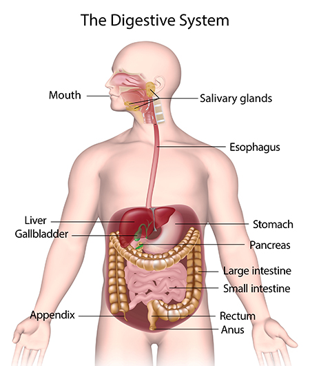

Aerobic and anaerobic respiration, lungs, gas exchange, nutrients, digestion, enzymes and food tests.
glucose + oxygen → carbon dioxide + water. Energy is released for movement, warmth and cell processes.
Which gas is needed for aerobic respiration?
Anaerobic respiration happens when there is not enough oxygen. In humans, lactic acid builds up. In yeast, fermentation produces ethanol and carbon dioxide.
As oxygen availability increases in muscles, lactic acid build-up should...
This bell-jar model shows how breathing works. When the diaphragm moves down, chest volume increases, pressure decreases and air moves into the lungs.
During inhalation, pressure inside the chest...
Gas exchange happens in the alveoli. Oxygen diffuses from the air in the alveolus into the blood. Carbon dioxide diffuses from the blood into the alveolus. Red blood cells carry oxygen away.
What do red blood cells carry away from the alveoli?
Nutrients have different jobs. First learn the correct pairs, then complete the quick check.
Main energy source.
Growth and repair.
Energy store and insulation.
Helps food move through the gut.
Transport and chemical reactions.
Keep the body healthy, e.g. bones, blood and immunity.
The functions are scrambled. Click a nutrient, then click the correct matching function to draw a line.
Which nutrient is mainly used for growth and repair?
Use the real digestive-system diagram. Click an organ or press “Next stage” to follow the journey of digestion and absorption, including the support organs that help digestion.

Food is chewed. Saliva contains amylase, an enzyme that starts breaking down starch.
Journey: mouth → oesophagus → stomach → liver/gall bladder/pancreas support digestion → small intestine absorption → large intestine → rectum/anus.
Important: food does not pass through the liver, gall bladder or pancreas. They release substances that help digestion in the small intestine.
Does food pass through the liver, gall bladder or pancreas?
Where are most digested food molecules absorbed?
Enzymes are biological catalysts. They have optimum conditions. Temperature and pH affect activity in different ways, so this model shows two separate graphs.
If investigating pH, what is the independent variable?
Food tests help identify nutrients. Learn the reagent and the positive result for each test.
Which test is used for lipids?
1. Aerobic respiration needs...
2. Respiration releases...
3. Gas exchange happens in the...
4. Protein is needed for...
5. Enzymes are...
6. Iodine tests for...
7. A student breathes 18 times in 1 minute. How many breaths in 5 minutes?
8. Heart rate increases from 70 to 110 bpm. Calculate the increase.
9. Convert 2 minutes to seconds.
10. 30 breaths in 2 minutes. Calculate breaths per minute.
11. Which product is made by yeast fermentation?
12. Which organ absorbs most digested food?
13. Explain why breathing rate increases during exercise.
14. Explain one adaptation of alveoli.
15. Explain what happens if enzymes get too hot.
16. Explain why fibre is needed in the diet.
17. Suggest one control variable in a food test practical.
18. Explain why digestion is needed.
19. Compare aerobic and anaerobic respiration.
20. Why should a practical be repeated?